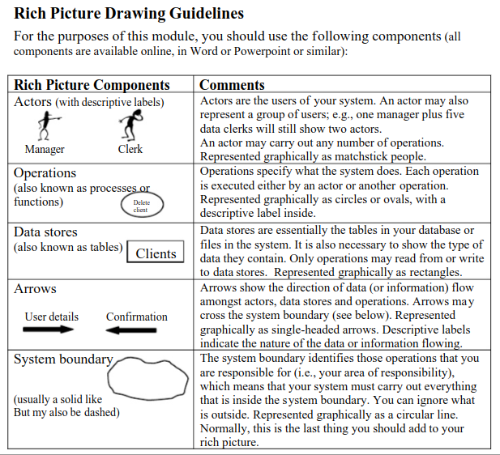
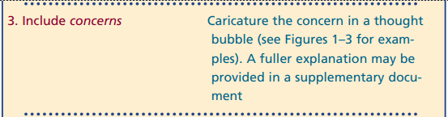
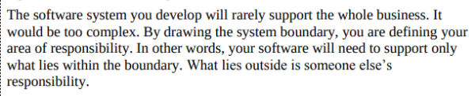
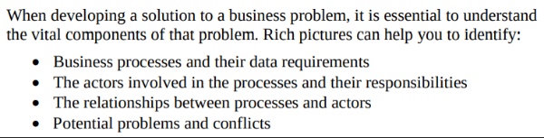
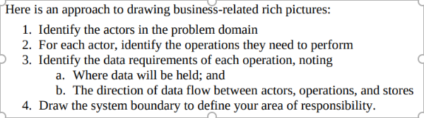

Verificação do Rich Picture
Introdução
Este documento tem como planejamento fazer uma verificação, e neste momento onde será feito uma inpeção do que foi produzido, e com isso tem como objetivo fazer as verificaçoes nescesarias para a entrega sem realizado com ezatidão
Objetivo
O objetivo deste documento é relatar os resultados das verificações realizadas acerca do artefato de Rich Picture da Etapa 1 do grupo.
Metodologia
todos os resultados da verificação do artefato poderam ser obtidos a partir das checklists elaboradas na página de planejamento em que o grupo eleaborou. Para responder às perguntas apresentadas nas checklist o avaliador usará as opções Sim, Não, Incompleto ou Não se aplica. O avaliador tambem poderá escrever observações se nescessário em cada pergunta para obter os detalhes se achar necessários.
Dados Encontrados
A tabela 1 apresenta sobre o checklist com os dados obtidos a partir das verificações.
Tabela 1 – Checklist de Verificação
| N° | Questão | Autor |
|---|---|---|
| 01 | Os artefatos de Rich Picture possuem legenda explicando os símbolos utilizados no diagrama? (Figura 1) | André Barros |
| 02 | Todos os 5 componentes de um Rich Picture estão presentes no artefato apresentado pelo grupo? (Figura 1) | André Barros |
| 03 | O Rich Picture indica de alguma forma as motivações/intenções das pessoas envolvidas? (Figura 2) | João Pedro |
| 04 | O Rich Picture apresenta os limites do sistema? (Figura 3) | Artur Ricardo |
| 05 | O Rich Picture apresenta cada ator relacionado com pelo menos uma atividade? (Figura 4) | Emivalto Júnior |
| 06 | O Rich Picture apresenta o fluxo de dados entre atores e sistema, e entre os componentes do sistema? (Figura 4) | Pedro Lopes |
| 07 | O Rich Picture informa os dados que são transmitidos, e o sentido em que são transmitidos? (Figura 5) | Matheus Henrick |
Tabela 2: Respostas da Verificação do Rich Pictures - Autoavaliação
| N° | Resposta | Observação | Versão do Artefato | Data | Horário |
|---|---|---|---|---|---|
| 01 | Sim | 06/11/2024 | 19:00 | ||
| 02 | Sim | 06/11/2024 | 19:00 | ||
| 03 | Sim | 06/11/2024 | 19:00 | ||
| 04 | Sim | 06/11/2024 | 19:00 | ||
| 05 | Sim | 06/11/2024 | 19:00 | ||
| 06 | Sim | 06/11/2024 | 19:00 | ||
| 07 | Sim | 06/11/2024 | 19:00 |
Tabela 1 – Padronização
Fonte: Emivalto Júnior.
📚 Referências Bibliográficas
figura 1: Referência de Rich Picture

Rich Picture Drawing Guidelines. CTEC2402 - Software Development Project.
Figura 2: Preocupações dos Envolvidos

(HOWARD, Steve; MONK, Andrew; Methods and Tools, p. 24)
Figura 3: Limites do Sistema

(CTEC2402, Software Development Project, p. 5)
Figura 4: Utilidade do Rich Picture

(CTEC2402 Software Development Project, p. 1)
Figura 5: Uma possível abordagem de Rich Picture

(CTEC2402 Software Development Project, p. 4)
Rich Picture Drawing Guidelines. CTEC2402 - Software Development Project.
Gravação da Revisão Grupo+1
Figura 1 – Rich Picture do aplicativo Meu SUS Digital
Fonte: Emivalto Júnior.
📑 Histórico de Versões
| Versão | Descrição | Autor(es) | Data de Produção | Revisor(es) | Data de Revisão |
|---|---|---|---|---|---|
1.0 |
Criação do documento | Emivalto Júnior | 5/11/2024 | Pedro Lopes | 06/11/2024 |
1.1 |
Adição da Gravação | Emivalto Júnior | 06/11/2024 |